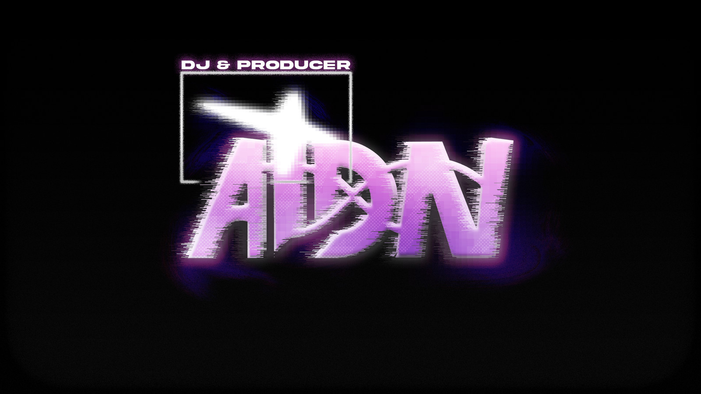
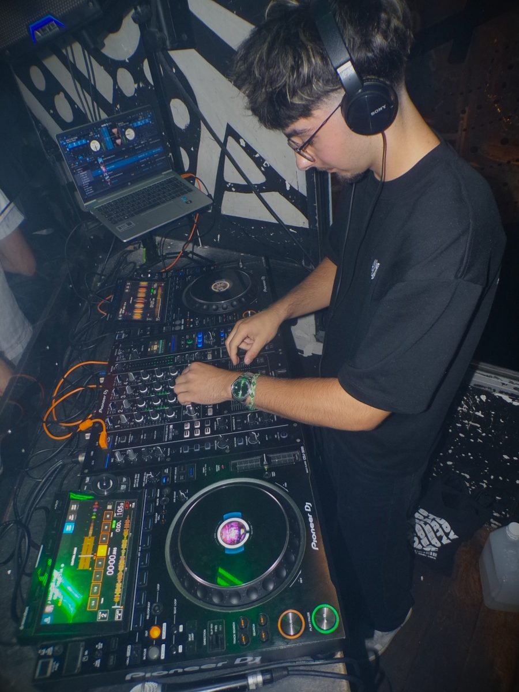

Presskit 2026

DJ en Vendée et à Nantes : rap, hip-hop, afro, amapiano, shatta, trap, dancehall, hard techno et open format. Un set qui lit la salle et ne lâche rien jusqu’au dernier titre.
01 - Qui je suis
Bio

AIDN est un DJ originaire de Vendée, disponible pour vos événements à Nantes, en Vendée et dans l’Ouest. Son univers mêle rap et hip-hop, afro, amapiano, shatta, trap, dancehall et hard techno, avec une approche open format adaptée au public.
À 19 ans, autodidacte et passionné par la musique, il travaille son identité sonore et son sens du dancefloor à travers des mixes réguliers publiés sur Instagram et TikTok, pour ensuite porter cette énergie sur scène, avec pour ambition d'en occuper davantage.
Baignant dans la musique depuis toujours, il pratique la batterie, le piano, la guitare et la production / composition musicale. Il transpose cette passion dans chaque performance, créant une atmosphère unique, portée par son expérience théâtrale.
02 - Informations pratiques
Booking
Disponible pour des dates en Vendée, à Nantes & alentours, en semaine comme le week-end. Contact 7j/7.
Demander un devis pour votre événement ↗Rider technique
Pour un set optimal, prévoir
- 1 table de mixage Pioneer DJM S7 ou équivalent
- 2 platines Pioneer CDJ 2000 (ou autres Pioneer)
- OU un contrôleur DJ Pioneer si pas de platines
- Si possible, un retour DJ booth
- 1 microphone
Matériel personnel
- PC portable
- Casque
- Stand support ordinateur
- Logiciel : Serato DJ Pro
Possibilité de s'adapter aux besoins spécifiques de chaque événement.
03 - Agenda
Dates
Chargement des dates…
Historique
04 - Médias
Médias
Mes mixes, extraits et coulisses : retrouve-moi sur les réseaux, ou plonge dans le mur d'images.
Extraits de mix, reels et coulisses des soirées.
Voir le profil ↗ TikTok @dj_aidnFormats courts : du studio à la scène.
Voir le profil ↗Premiers sets filmés et mixes complets, bientôt en ligne.
Chaîne bientôt disponible05 - Réserver une date